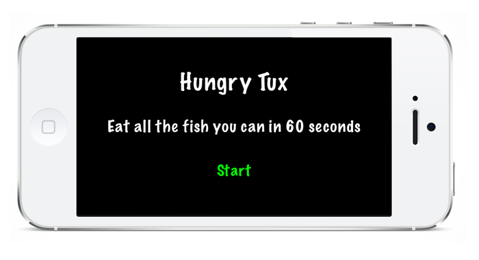
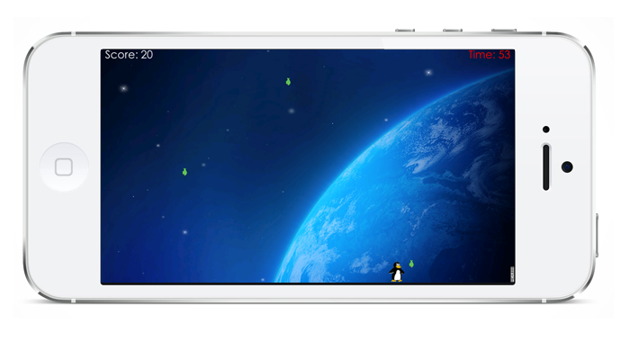
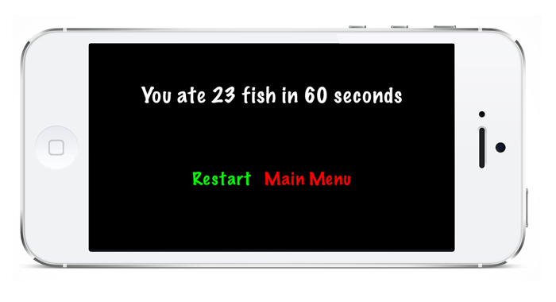

Hungry Tux
- 

- 
- 
Hungry Tux is nothing more than an excuse to play around with the Cocos2D engine :). The "game" is very simple and, I would say, quite silly. For the graphics I used free images I found online.
This project is an old one. My first try with Cocos2D was in the summer of 2011. Hungry Tux was done in March 2012, to see what I remembered from the previous summer. In that period I didn't have a mac to code, and I was using one at my University when I had access to it.
I updated this project to a newer version of Cocos2D in the autumn of 2013. However, the game is still a prototype, a proof of concept, and will probably never be on the market. Unless somebody is willing to help me with the graphics for the game :).
As it is now, the user controls a penguin's movements to the left or right by tapping on the left or right sides of the screen. The goal is to eat as much fish as possible in 60 seconds.
Further improvements (aka 'stuff I want to play with') are:
- accelerometer control
- integration with the Game Center
The code for this project is on my GitHub profile.